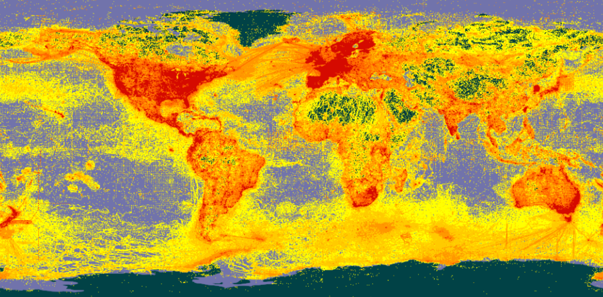

# Números (pueden ser enteros o decimales)
x <- 10
x
## [1] 10
# Hileras de caracteres (se delimitan entre comillas simples o dobles)
nombre <- 'Manuel'
nombre
## [1] "Manuel"
# Lógicos (Verdadero o Falso, TRUE o FALSE)
p <- 1 > 2
p
## [1] FALSE
# Vectores (pueden contener elementos de cualquier tipo de datos)
dias <- c('Domingo', 'Lunes', 'Martes', 'Miércoles', 'Jueves', 'Viernes', 'Sábado')
dias
## [1] "Domingo" "Lunes" "Martes" "Miércoles" "Jueves" "Viernes"
## [7] "Sábado"4 R
4.1 Resumen
4.2 Trabajo previo
4.2.1 Instalación de software
Para la edición de código en R, se recomienda instalar:
- Sistema base del lenguaje R
- RStudio Desktop (la versión v2022.07 y superiores son las cuales cuentan con los componentes necesarios para trabajar con Quarto)
Si se va a trabajar con datos geoespaciales, es conveniente contar con un sistema de información geográfica de escritorio, como QGIS.
4.2.2 Tutoriales
4.3 El lenguaje de programación R
R es un lenguaje de programación enfocado en análisis estadístico. Es ampliamente utilizado en diversas áreas de investigación, entre las que pueden mencionarse ciencia de datos (data science), big data y aprendizaje automático (machine learning), con aplicaciones en campos como biomedicina, bioinformática y finanzas, entre muchos otros. Fue creado por Ross Ihaka y Robert Gentleman en la Universidad de Auckland, Nueva Zelanda, en 1993.
R es un proyecto de software libre que se comparte mediante una licencia GNU General Public Licence (GNU GPL). Esta característica permite que la funcionalidad original de R pueda ser ampliada mediante bibliotecas o paquetes desarrollados por la comunidad de programadores.
Para programar en R, puede utilizarse una interfaz de línea de comandos, editores de texto (ej. Visual Studio Code, Vim) y también ambientes de desarrollo integrados (IDE, integrated development environment) como Jupyter o RStudio.
4.3.1 Tipos de datos y variables
R puede trabajar con varios tipos de datos básicos, entre los que están números, caracteres (i.e. textos), lógicos, vectores y matrices. También puede trabajar con tipos compuestos, como factores y data frames.
En la memoria de una computadora, los datos se almacenan en variables. Una variable puede considerarse como una etiqueta que se le asigna a un dato. Hay muchas formas de crear variables en R. Una de las más sencillas es con los operadores de asignación. Estos son = y <- (o ->). Por ejemplo, las siguientes sentencias crean variables de varios tipos de datos simples.
Un tipo de datos fundamental para el análisis de datos en R, es el data frame. Es una estructura bidimensional similar a lo que comúnmente se conoce como una tabla. Sus filas corresponden a las observaciones de un conjunto de datos y sus columnas a las variables. Los data frames implementan un conjunto de funciones similares a las de una hoja electrónica o una tabla de una base de datos relacional.
R cuenta con una gran cantidad de funciones para manejar data frames y también con varios conjuntos de datos, implementados como data frames, los cuales se instalan con la distribución base de R.
# Información sobre todos los conjuntos de datos incorporados en la distribución base de R
data()
# Información sobre el cojunto de datos cars
?cars
# Despliegue de los datos de cars
View(cars)
# Información sobre el cojunto de datos mtcars
?mtcars
# Despliegue de los datos de mtcars
View(mtcars)
# Información sobre el cojunto de datos iris
?iris
# Despliegue de los datos de iris
View(iris)4.3.2 Funciones
R, al igual que otros lenguajes de programación, estructura su funcionalidad en unidades de código fuente llamadas funciones. Cada función realiza una tarea específica como, por ejemplo, un cálculo matemático y, por lo general, retorna un valor como salida. Todas las funciones tienen un nombre y, opcionalmente, un conjunto de argumentos que especifican los datos de entrada que procesa la función. Los argumentos se escriben entre paréntesis redondos (()) y estos siempre deben incluirse, aún en el caso de que la función no tenga ningún argumento. Si la función tiene varios argumentos, deben separarse mediante comas (,).
# Impresión de una hilera de caracteres
print("Hola mundo")[1] "Hola mundo"# Cálculo de la media aritmética
mean(c(2, 4, 5, 9))[1] 54.3.3 Paquetes
Las funciones de R se distribuyen en paquetes. Cada paquete contiene un conjunto de funciones y estructuras de datos relacionadas entre sí. También hay paquetes que contienen datos.
Para utilizar un paquete, primero debe cargarse (en la memoria del computador) con la función library().
# Carga del paquete stats
library(stats)Algunos paquetes están contenidos en la distribución base de R. Otros deben instalarse con la función install.packages().
En el siguiente ejemplo, se instala el paquete palmerpenguins.
# Instalación del paquete palmerpenguins (note las comillas)
install.packages("palmerpenguins")
# Carga del paquete palmerpenguins
library(palmerpenguins)4.4 Descripción general
Quarto es un sistema de publicación de documentos técnicos y científicos, basado en código abierto. Entre sus principales capacidades están:
- Crear contenido dinámico con los lenguajes R, Python, Julia y Observable.
- Crear documentos Markdown de texto plano o cuadernos de notas de Jupyter.
- Publicar artículos académicos, reportes, presentaciones, sitios web, blogs y libros en HTML, PDF, MS Word, ePub y otros formatos.
- Crear contenido científico, incluyendo ecuaciones, citas bibliográficas, referencias cruzadas, figuras y otros elementos.
Quarto fue anunciado oficialmente por Posit (anteriormente, la Fundación RStudio) en julio de 2022, como la siguiente generación de R Markdown, un formato que permite insertar código en R, y sus salidas, en documentos escritos en Markdown. R Markdown fue introducido por Yihui Xie en 2012, junto con el paquete knitr, cuyo propósito es facilitar la investigación reproducible en R a través de la programación literaria (literate programming), un paradigma de programación propuesto por Donald Knuth en 1984.
Los programas “literarios” (o “letrados”) están escritos como una exposición lógica en un lenguaje humano similar a la explicación de las fórmulas y ecuaciones empleadas para representar y resolver un problema en un texto de física o de matemáticas. En estos programas, se describe el análisis del problema, su solución y su implementación, intercalando código fuente entre los párrafos (y otros contenidos como imágenes, tablas, gráficos estadísticos y mapas), de forma similar a como en los textos de matemáticas se intercalan las fórmulas y las ecuaciones. La programación literaria puede mejorar enormemente un programa, ya que permite documentar ampliamente en qué consiste el problema a resolver, cómo se resuelve, cómo y por qué se adoptó cierto diseño, cómo se optimizó y cómo se implementó en un lenguaje de programación.
4.5 Anatomía de un documento Quarto
Un documento Quarto tiene tres tipos de contenido:
- Metadatos en YAML.
- Narrativa en Markdown.
- Bloques de código fuente.
4.5.1 Metadatos en YAML
Todo documento Quarto inicia con un encabezado en la sintaxis YAML (YAML Ain’t Markup Language), el cual contiene metadatos del documento como el título, el autor, la fecha de creación, el formato de salida y la estructura de la tabla de contenidos, entre muchos otros.
Un encabezado YAML comienza y termina con tres guiones (---) y contiene un conjunto de campos y valores de la forma:
---
campo01: valor01
campo02: valor02
campo0n: valor0n
---Por ejemplo, un encabezado YAML típico puede ser el siguiente:
---
title: Mi primer documento Quarto
format: html
editor: visual
---Los campos del encabezado pueden anidarse con sangrías de dos espacios como, por ejemplo:
---
format:
html:
toc: true
toc_float: true
---Los elementos de metadatos que pueden especificarse en el encabezado, pueden variar de acuerdo al formato de salida, como puede verse en los siguientes enlaces:
Existen elementos de metadatos para muchos otros formatos de salida (OpenOffice, ePub, presentaciones, wikis, etc.), como puede apreciarse en la Referencia de Quarto.
4.5.2 Narrativa en Markdown
La narrativa proporciona estructura y contenido al documento en la forma de encabezados, párrafos, enlaces y otros elementos de la sintaxis de Markdown.
4.5.3 Bloques de código fuente
En Quarto, los bloques (chunks) de código fuente se delimitan con tres backticks, tanto al inicio como al final del bloque. Los bloques en R se identifican con {r} y se configuran con diferentes opciones que inician con #|. Los bloques de otros lenguajes de programación se identifican con {python} y {julia}, por ejemplo.
El siguiente es un ejemplo de bloque de código en R y su salida:
```{r}
#| label: graficacion-cars
#| include: true
#| echo: true
plot(
x = cars$speed,
y = cars$dist,
main = "Velocidad vs distancia de frenado",
xlab = "Velocidad (mph)",
ylab = "Distancia (pies)"
)
```
La opción label se utiliza para etiquetar el bloque. La de include para especificar si se desea que el bloque y sus resultados se incluyan en el documento de salida. Por su parte, echo indica si el código fuente debe desplegarse o no.
4.6 ¿Cómo funciona Quarto?
Quarto se apoya en knitr y en Pandoc. knitr ejecuta el código en R (u otro lenguaje) y convierte los documentos a Markdown. Por su parte, Pandoc exporta los documentos Markdown al formato de salida deseado (ej. HTML, PDF, MS Word, MS PowerPoint). Este proceso se ilustra en la Figure 4.1.

4.7 Herramientas para escritura
4.7.1 Figuras
4.7.1.1 Sintaxis básica
En su forma más básica, una figura puede crearse en Quarto con la misma sintaxis de Markdown (específicamente Pandoc Markdown).

Nótese como el texto entre paréntesis cuadrados se despliega al pie de la figura. En algunos formatos de salida (ej. PDF, LaTeX), las figuras se numeran automáticamente.
4.7.1.2 Tamaño
Por defecto, las figuras se despliegan con su tamaño nativo. Este puede modificarse con los atributos width y height, los cuales utilizan pixeles como unidad de medida por defecto.
{width=300}
Si se usa solo uno de los atributos, el otro se ajusta automáticamente. Pueden usarse otras unidades de medida como porcentajes, pulgadas o milímetros.
{width=80%}
{height=3in}
{height=76.2mm}
4.7.1.3 Enlaces
Una figura puede funcionar como un enlace a otro documento. La dirección del enlace se escribe entre paréntesis redondos.
[{height=50mm}](https://es.wikipedia.org/wiki/Panthera_onca)
4.7.1.4 Alineación
La alineación por defecto de las figuras es en el centro. Se pueden elegir otras alineaciones mediante el atributo fig-align.
{fig-align="right" height=50mm}
{fig-align="left" height=50mm}
4.7.1.5 Referencias
Para crear referencias a figuras, deben identificarse con el prefijo fig-. Luego, pueden referenciarse con el prefijo @. Por ejemplo:
Actualmente, el portal de datos de la Infraestructura Mundial
de Información en Biodiversidad (GBIF) agrupa más de
dos mil millones de registros de presencia de especies,
cuya distribución espacial puede observarse en la @fig-mapagbif.
{#fig-mapagbif}Actualmente, el portal de datos de la Infraestructura Mundial de Información en Biodiversidad (GBIF) agrupa más de dos mil millones de registros de presencia de especies, cuya distribución espacial puede observarse en la Figure 4.2.

4.7.1.6 Grupos de figuras
Para mostrar varias figuras como un grupo, puede crearse una división (div) con los caracteres :::, al inicial y al final. Por ejemplo:
::: {#fig-felinos-grandes-costarica layout-ncol=2}
{#fig-jaguar}
{#fig-puma}
Felinos más grandes de Costa Rica
:::
El atributo layout-ncol especifica el número de columnas.
::: {#fig-felinos-costarica layout-ncol=2}
{#fig-jaguar}
{#fig-puma}
{#fig-manigordo}
{#fig-yaguarondi}
{#fig-caucel}
{#fig-tigrinus}
Todos los felinos de Costa Rica
:::


Para más detalles sobre figuras, se recomienda consultar Quarto - Figures.
4.7.2 Citas bibliográficas
Quarto puede generar citas bibliográficas y bibliografías en un varios estilos. Para esto, es necesario:
- Un documento Quarto con citas (vea Citation Markdown).
- Una fuente de datos bibliográfica como, por ejemplo, un archivo BibLaTeX (
.bib) o un archivo BibTeX (.bibtex). - Opcionalmente, un archivo CSL (
.csl) para formatear las citas y la bibiografía.
4.7.2.1 Archivos bibliográficos
El archivo (o los archivos) bibliográficos que utiliza un documento, se especifican en la sección de YAML, mediante el campo bibliography. Por ejemplo:
---
title: "Felinos"
bibliography: bibliografia/referencias.bib
---En Pandoc - Citations puede encontrar más información sobre los formatos bibliográficos. También puede ver aquí un ejemplo de archivo .bib.
4.7.2.2 Sintaxis de las citas
Las citas se especifican con el prefijo @. Por ejemplo:
La familia *Felidae* tiene 36 especies [@lamberski_felidae_2015].Genera la siguiente salida:
La familia Felidae tiene 36 especies (Lamberski, 2015).
Para más información sobre las variaciones en la sintaxis de las citas, se recomienda consultar Citation Syntax.
4.7.2.3 Estilo de las citas
Por defecto, Quarto utiliza el Manual de estilo Chicago, pero puede usar cualquier estilo definido mediante Citation Style Language (CSL). El archivo CSL que se utiliza debe especificarse en la sección YAML con el campo csl.
---
title: "Felinos"
bibliography: bibliografia/referencias.bib
csl: bibliografia/apa-6th-edition.csl
---Pueden encontrarse archivos CSL ya definidos en el repositorio central del Proyecto CSL o en el repositorio de estilos de Zotero.
Para más información sobre los estilos de las citas, se recomienda consultar Citation Style.
4.7.2.4 Generación de bibliografía
La lista de recursos citados se genera en una división con la identificación refs. Por ejemplo:
### Referencias
::: {#refs}
:::Si no encuentra esta división en el documento, Quarto generará la bibliografía al final de este.
Para más detalles sobre citas bibliográficas en Quarto, se recomienda consultar Quarto . Citations & Footnotes.
4.8 Ejemplo de documento Quarto
- Sitio en GitHub Pages: https://mesa-monitoreo-puntos.github.io/felinos/
- Código fuente: https://github.com/mesa-monitoreo-puntos/felinos
4.9 Ejercicios
- Desarrolle en documento Quarto con un tema de su elección y publíquelo en GitHub Pages. Se recomienda seguir los siguientes pasos:
- Cree un nuevo proyecto en RStudio.
- Cree un documento Quarto con nombre
index.qmdque incluya, al menos:- Texto.
- Varios niveles de encabezados.
- Enlaces.
- Figuras y referencias a estas.
- Citas bibliográficas.
- Genere el archivo
index.html. - Cree un nuevo repositorio en GitHub y suba los archivos
index.qmdeindex.html. - Publique el repositorio como un sitio GitHub Pages.